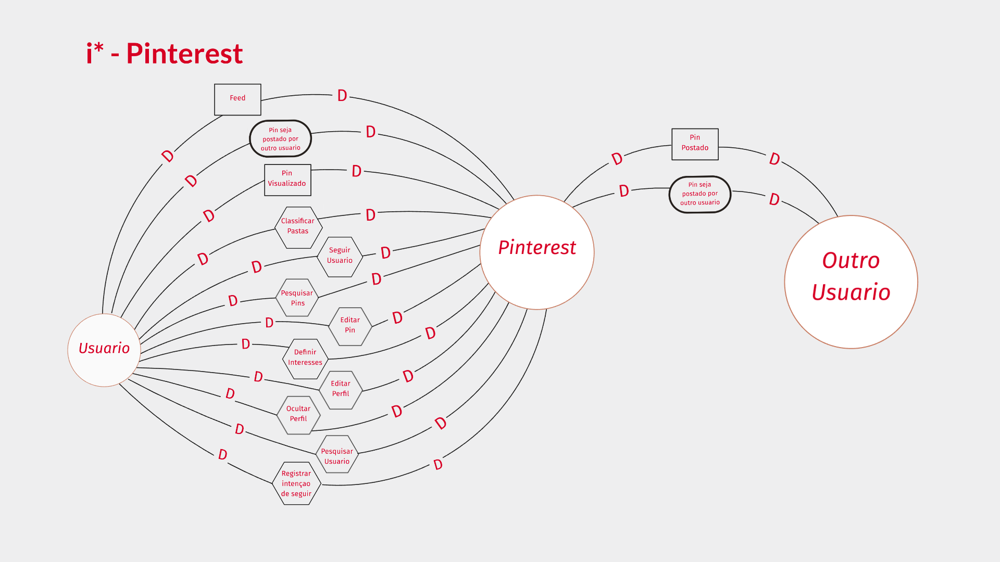
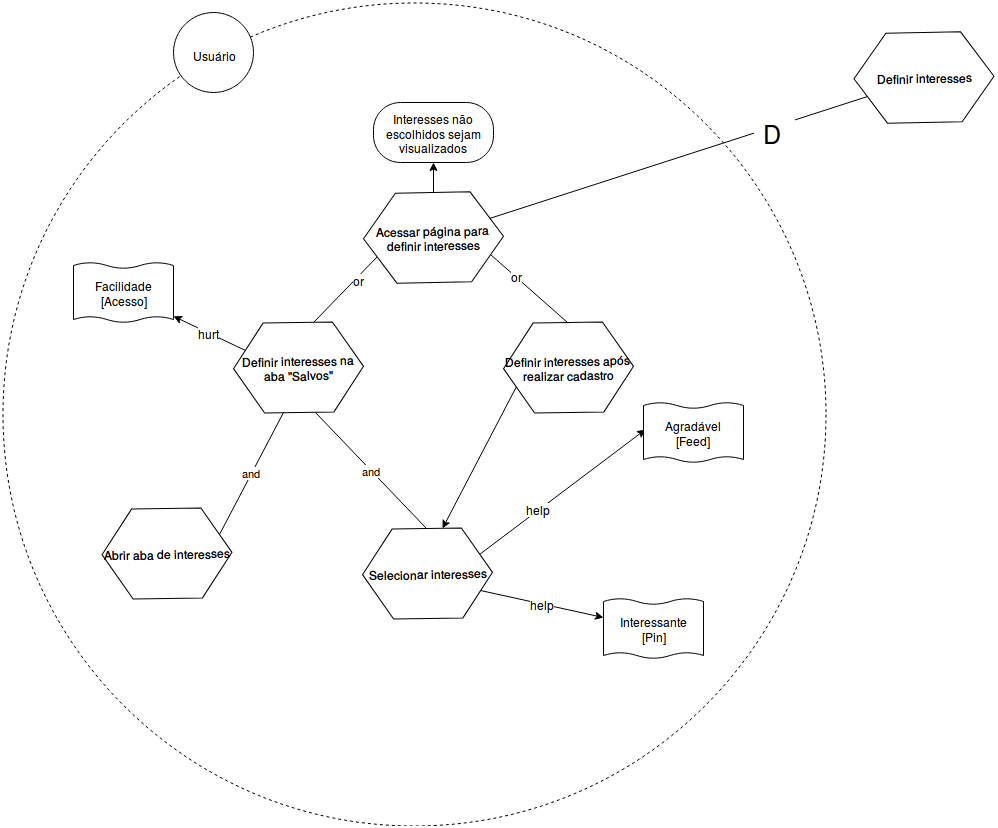
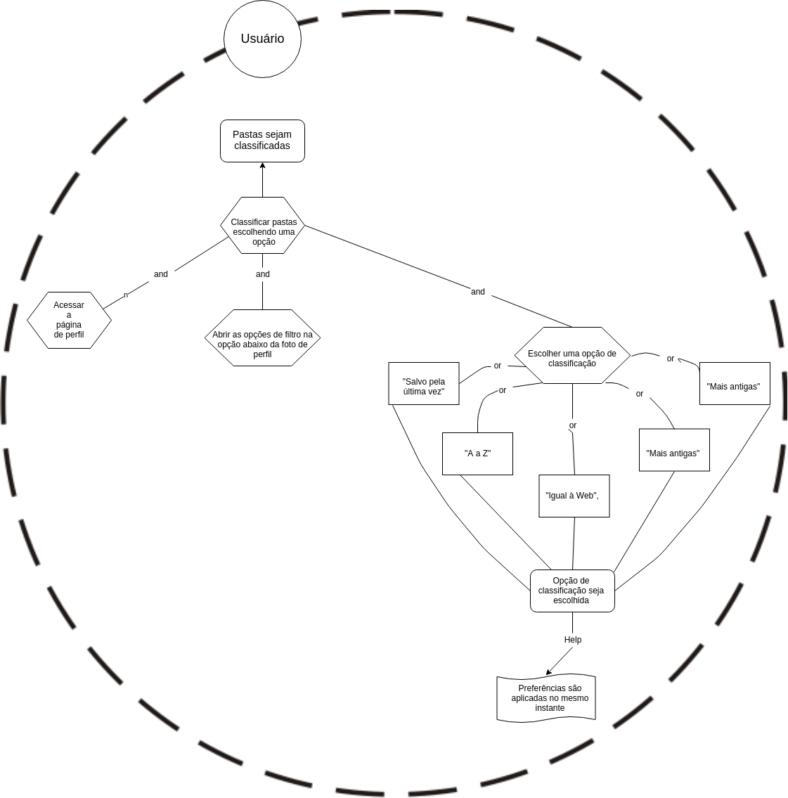
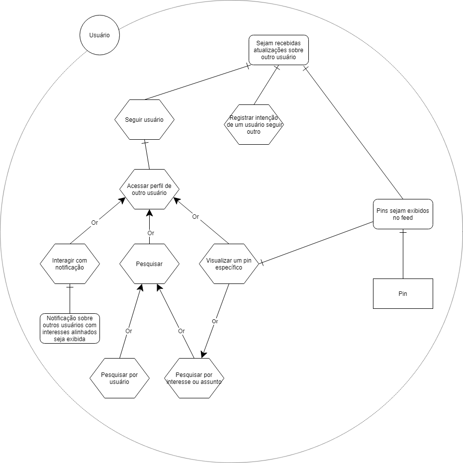
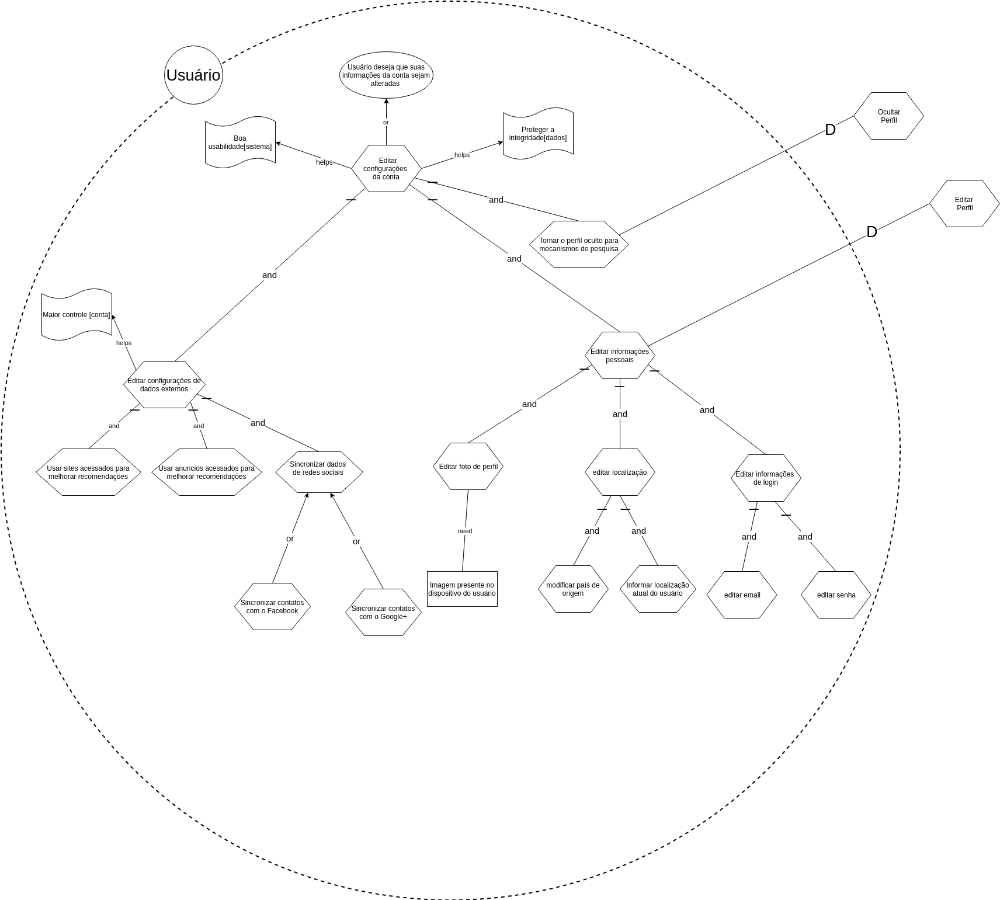
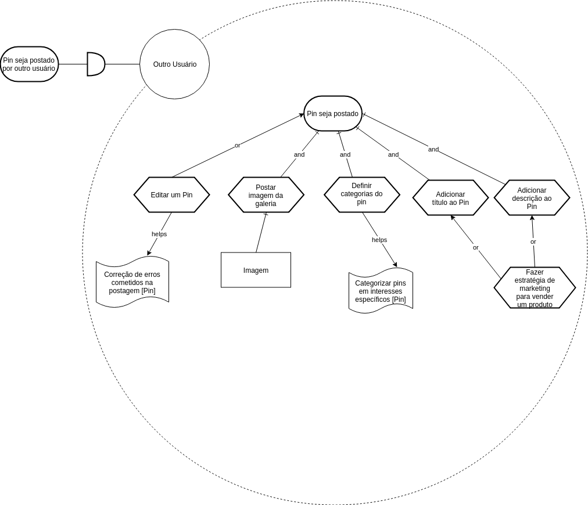
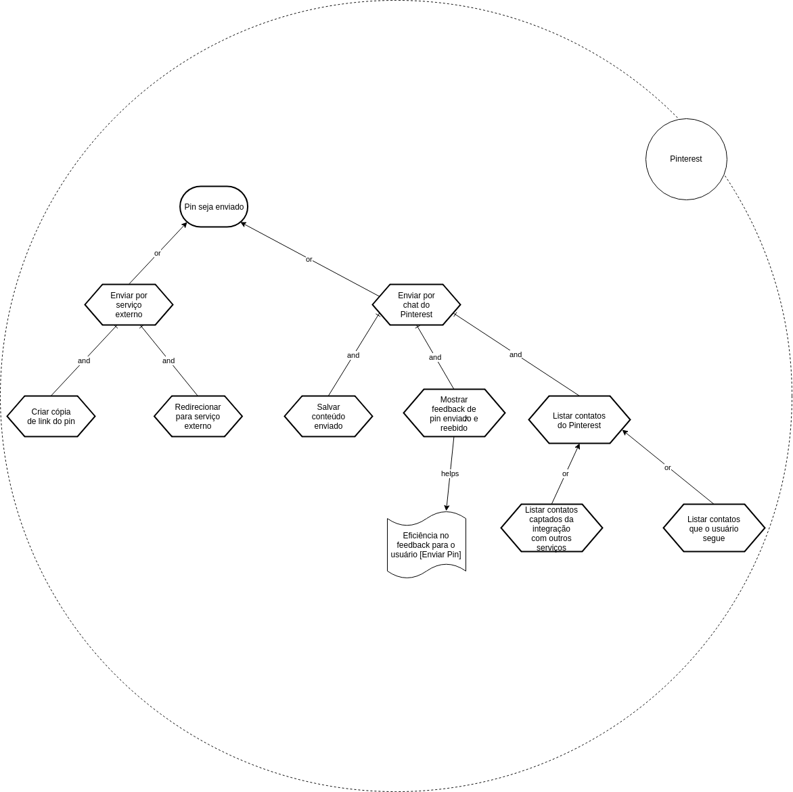
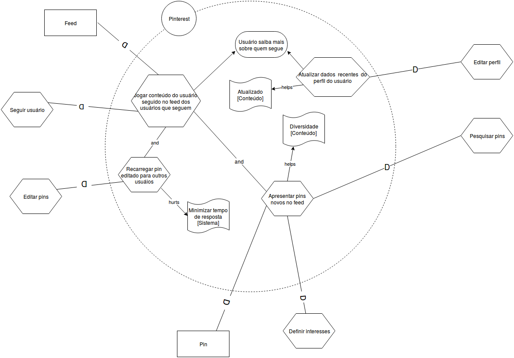

Strategic Dependency Models
Geral

Strategic Rationale Models
Definir interesses

Classificar pastas

Pesquisar Pins
Seguir usuário

Editar configurações de conta

Cadastro no Pinterest

Enviar Pin
Usuário

Outro Usuário

Enviar Pin

Geral
